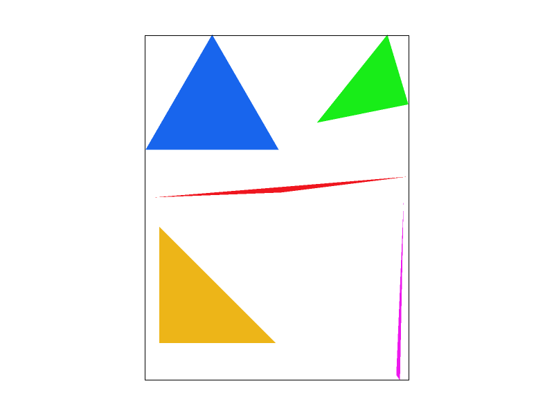
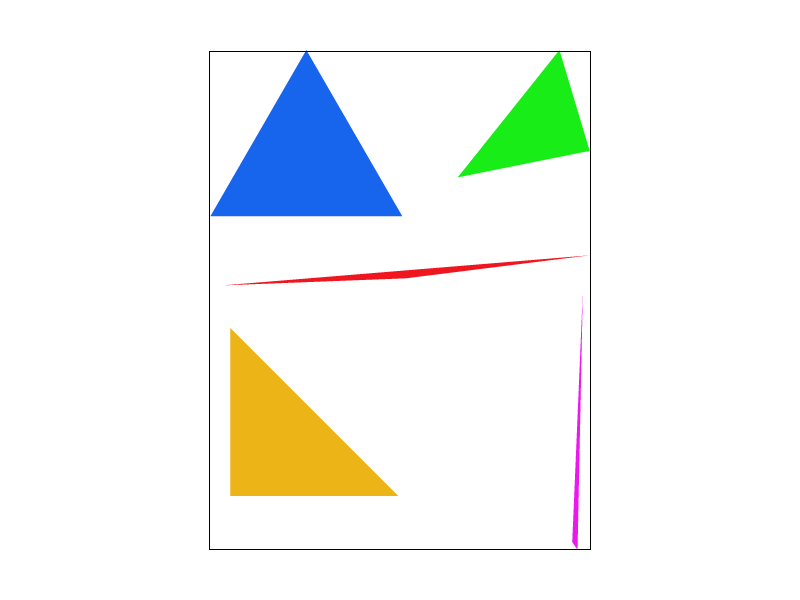
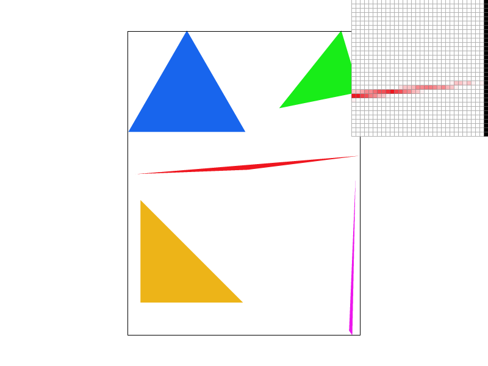
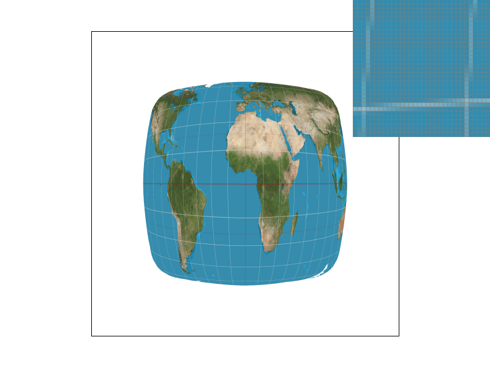

CS184/284A Summer 2025 Homework 1 Write-Up
Link to webpage: https://cal-cs184.github.io/hw-webpages-su25-pssup/
Link to GitHub repository: https://github.com/cal-cs184/hw-webpages-su25-pssup
Overview
In this assignment, I implemented a renderer that can display a simple SVG file as an image using a rasterizer. Starting with drawing a triangle, antialiasing is implemented using supersampling. Then, linear transformations such as translation, scaling, and rotation are implemented. Gradients within the triangle are also implemented using barycentric interpolation. Finally, texture mapping is implemented using mipmaps.
Task 1: Drawing Single-Color Triangles
The most basic way to rasterize a triangle is to check each point to determine whether it is inside the triangle. For each point inside the bounding box of the triangle, check which side of the line connecting the two points of the triangle the point is on. The formula for checking for a line is as follows:
\[ L_i(x, y) = -(x - X_i) (Y_{i+1} - Y_i) + (y - Y_i) (X_{i+1} - X_i) \]The sign of \( L_i \) determines which side of the line the point is on. The signs of \( L_i \) must be the same for all three lines, and whether this sign is positive or negative when the point is inside the triangle is determined based on whether the vertices of the triangle are oriented clockwise or counterclockwise.
Note that the check here for each point is performed only within the bounding box of the triangle. The bounding box of a triangle is the smallest rectangle that the triangle can fit inside, and the bounding box can be obtained by finding the minimum and maximum x and y coordinates of the triangle's vertices. Therefore, the algorithm implemented in the code checks each sample within the bounding box of the triangle, which is efficient enough for the purpose.
Below is an example of rendering an svg file with basic rasterization.

If you look at the thin section of a triangle here, the shape appears to be "broken". This happens because the triangle's sides pass between the points in the middle of the grid, and the points beyond are included between the triangle's sides. You can see this in the figure below:

Here is an example 2x2 gridlike structure using an HTML table. Each tr is a row and each td is a column in that row. You might find this useful for framing and showing your result images in an organized fashion.

|
|
|
|
|
Task 2: Antialiasing by Supersampling
Supersampling is the process of sampling a pixel using a denser number of samples. It starts with a higher resolution image and then downsamples it to the final output resolution.
In the rasterization pipeline, there was originally a direct one-to-one correspondence between the pixels of the final output image and the samples output by rasterization. However, after adding supersampling, each pixel corresponds to multiple samples, and the output is the average of each sample. This process makes the image output smoother for the boundaries of shapes, and antialiasing is performed. Supersampling is a useful method for realizing antialiasing through simple ideas and implementations.
Detailed explanation of the code that implements supersampling: For an image of the original width × height, when sample_rate samples are placed in one pixel, the scaling rate for one axis is sideRate = sqrt(sample_rate). And in the sample_buffer, the sample at the index y * width * sideRate + x corresponds to the coordinate \( ((x+0.5)/r, (y+0.5)/r) \) where \(r\) is the sideRate.
The following images show the renders for sample rates of 1, 4, and 16 respectively.

|
|
|

|
|
|

|

|
If you look at what happens as the sample rate increases, you can see that the ends of the red triangles are less broken, and the pixels are more continuous and appear blurred. This is because, as the sample rate increases, there are more samples included in the shape, and the shape no longer appears broken.
Task 3: Transforms
Transformation is the process of moving the coordinates of one point to another, including translation, scaling, and rotation. Linear transformations in homogeneous coordinates are accomplished by multiplying the column vectors \( (x,y,1)^{T} \) representing coordinates by the following matrices.
For translation: \[ \begin{pmatrix} 1 & 0 & d_{x}\\ 0 & 1 & d_{y}\\ 0 & 0 & 1 \end{pmatrix} \] For scaling: \[ \begin{pmatrix} s_{x} & 0 & 0\\ 0 & s_{y} & 0\\ 0 & 0 & 1 \end{pmatrix} \] For rotation (counterclockwise): \[ \begin{pmatrix} \cos{\theta} & -\sin{\theta} & 0\\ \sin{\theta} & \cos{\theta} & 0\\ 0 & 0 & 1 \end{pmatrix} \]With these transform matrices, the corresponding transforms in SVG are rendered. Here is a rendering of robot.svg:

By modifying these transforms in the SVG file, you can make your robot do interesting things. Below is a version of my robot image, where the robot with various colors poses a running motion.
Task 4: Barycentric coordinates
The barycentric coordinate system is a coordinate system that expresses the location of a point within a triangle relative to each vertex of the triangle. For a point \(P\) and a triangle \(ABC\), the barycentric coordinate of the point is \((\alpha, \beta, \gamma)\) such that:
\[ P = \alpha A + \beta B + \gamma C, \quad \alpha + \beta + \gamma = 1 \]Each component of the coordinate represents a proportional distance from the opposite side of the corresponding vertex. From this perspective, for the points in 2D space, the formulas for each component of the barycentric coordinate of \(P\) are:
\[ \alpha = \frac{L_{BC}(P)}{L_{BC}(A)}, \quad \beta = \frac{L_{CA}(P)}{L_{CA}(B)}, \quad \gamma = 1 - \alpha - \beta \]where \(L_{l}(P)\) is the function measuring the relative distance of the point \(P\) from the line \(l\). (See Task 1)
Alternatively, the coordinate of a point can be interpreted as the mass of each vertex for that point to become the barycenter of the triangle. From this perspective, each component represented by a coordinate acts as a "weight" in the weighted average of the vertices of the triangle. Through the barycentric coordinate system, it is possible to have a one-to-one correspondence for each point between different triangles.
Below is an example of visualizing a barycentric coordinate system. In a triangle, each vertex has a color corresponding to each pure RGB component, and the color of each pixel within the triangle is a weighted average of the weights corresponding to the barycentric coordinate of that point.
The barycentric coordinate system allows us to represent gradients within a triangle. The following color wheel is a rendering that utilizes this.

Task 5: "Pixel sampling" for texture mapping
Texture mapping is mapping an existing texture to the shape of the screen. As a simple case, pixel sampling is performed by sampling the texture coordinates \((u,v)\) corresponding to the coordinates \((x,y)\) of each pixel sample of the target image, where the correspondence between the two coordinates is performed through barycentric coordinates. When sampling the points in the texture, there are two sampling methods: nearest sampling and bilinear sampling. Nearest sampling simply takes a sample of the nearest pixel in the grid, while bilinear sampling takes four pixels around the sample and linearly interpolates them in two dimensions. While bilinear sampling is more complex than nearest sampling, bilinear sampling can produce smoother images.
Below are image renderings of the same svg file, showing the differences between different parameter options.
|
|
|
|
|

|
If you look at the images above, you can see that bilinear sampling has fewer line breaks and is relatively smoother than nearest sampling, even at lower sampling rates. This is because bilinear sampling takes into account surrounding samples in the texture and takes a weighted average.